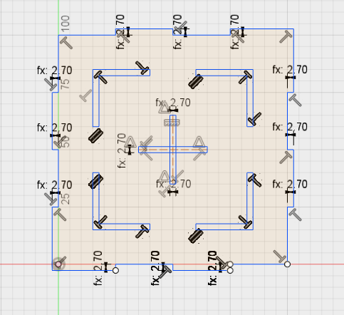
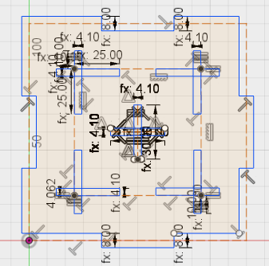
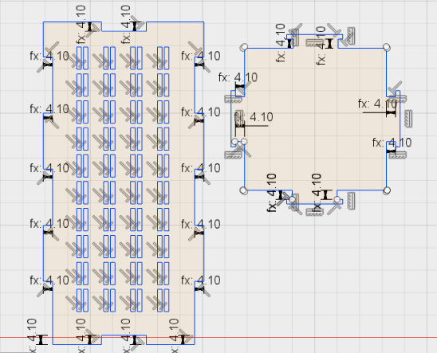
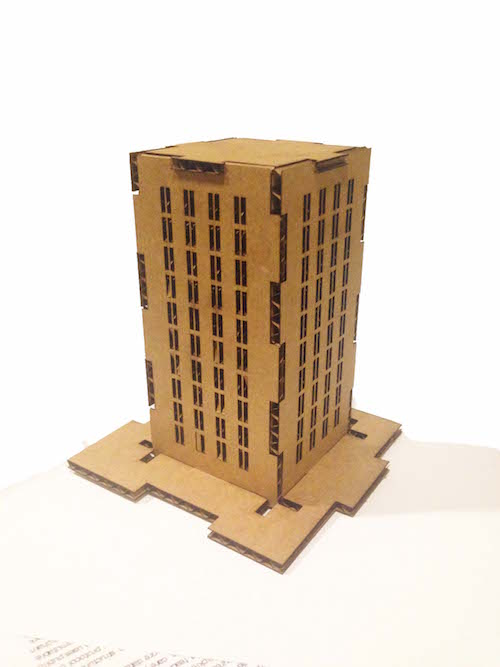
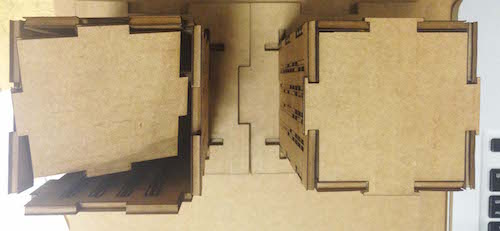
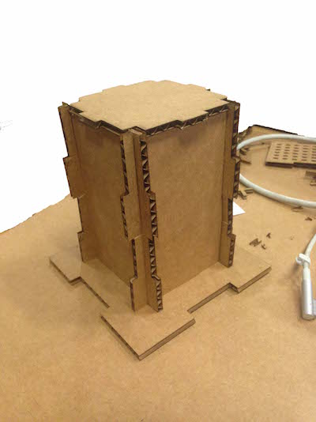
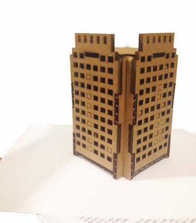
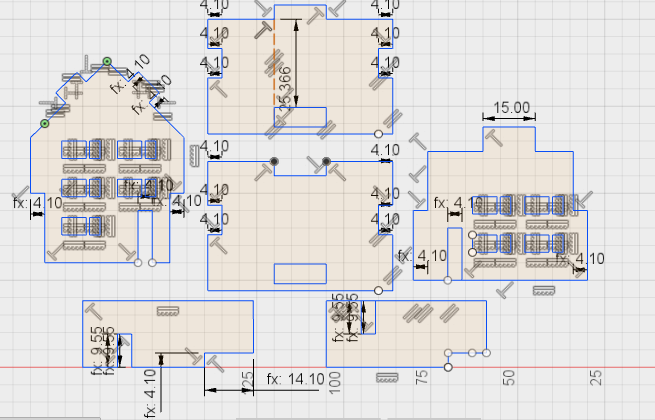
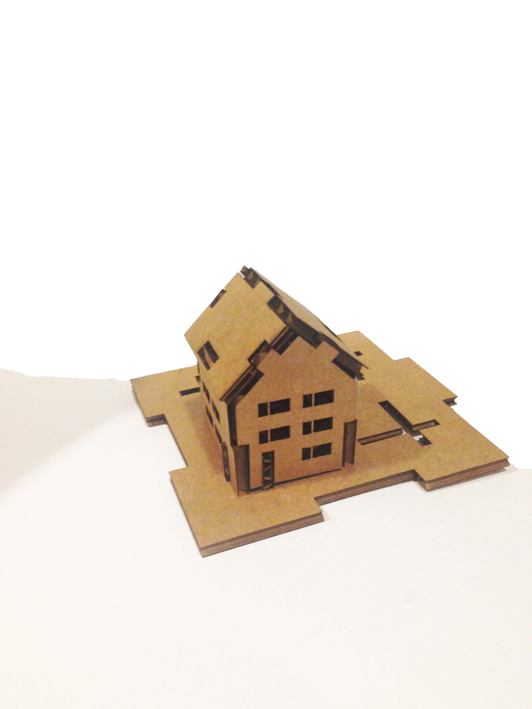
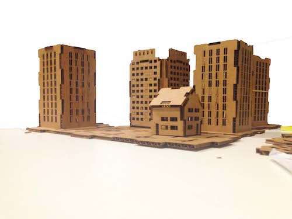

laptop sticker
I've always been fond of the russian painter Kasmir Malevich. I thought that re-creating his most famous work 'Black Square' (it's a black square) might be a bit of a cop out, and I was interested to try and work with multiple colours.

Here I used adobe illustrator to trace the painting 'Aeroplane Flying', shown above in the original and traced form, with different colours separated into layers. In order to cut the layers separately, I used CorelDraw, which allows different layers to be sent to the printer at different times, instead of using 4 separate files.


The two squares in the corner of the piece are registration marks: these allow the different colours to be matched up, and ensure the final sticker is well aligned. The separated layers are pictured above. Assembling the pieces, I used a strip of masking tape to align the registration marks, and make sure they could be removed after they were stuck down.


press kit city
For the laser cutter task, I chose to look at making a build-your-own-city kit. The idea of the kit is to be modular and adaptible, with each feature fitting onto a standardised, tesselating base tile. As any feature constructed would need to fit into the tile, there are a number of possible slots to incorporate different kinds of building (flats, houses, parks etc).
The initial base tile I made was all well and good -- until I came to fit the pieces together, and realised I hadn't actually checked that they tesselated in CAD (they didn't). This was annoying, but by this point I'd progressed a bit further with the design of the other parts (and had a better understanding of parametrisation), so the final base tile was much improved. (below: the base before and after improvement)


I chose to do the designs in Fusion 360 -- I'd found this the most usble of the CAD packages I'd tried in part 1, as well as one of the more extensive and useful. Here I was completely saved by having parametrised the card width; I'd misremembered the measurement as 2.7mm (way lower than the 4.1mm I eventually used for the slot) -- but correcting this was pretty painless compared to how long it would've taken with just a manual measurement. For this task, I settled on 3 different buildings -- 2 high-rise, 1 low-rise -- to test out different constructions.


The first and simplest building (above) was a 4-sided block of flats: this was reasonably easy to fit to the base, and came out well. The initial design for the roof did not hold the top together sufficiently, and was greatly improved by the addition of small 'hooks' around the edges of the slots in the redesign. (below left: before, below right: after).

The second building (below) proved more complicated, partly due to a misunderstanding of constraints, and a lack of parametrisation (changing one thing changed lots of things, very slightly, and nothing fit). Problems with this building were eventually ironed out, however, and the final form works well. The base shape (intersecting cross) is also extremely sturdy, and would form a good base for taller construction.


For the third building, I chose to make a smaller piece in the shape of a house, to fit on one quadrant of the base tile. The card was a little thick compared to the size of this one, a thickness that felt unwieldy, especially with the roof (where it caused a lot of problems). It would be nice to revisit the 'small' design with a simpler shape.


The final cityscape was a little modest (I might print some more now the designs have been tested!) but as a proof of concept is a good starting point for the final project. A lot of mistakes in the manufacture (some learning, some preventable) meant this took a very long time; I think on a second run this kind of project will be a lot quicker. As my first proper encounter with parametric CAD it was a steep learning curve.
